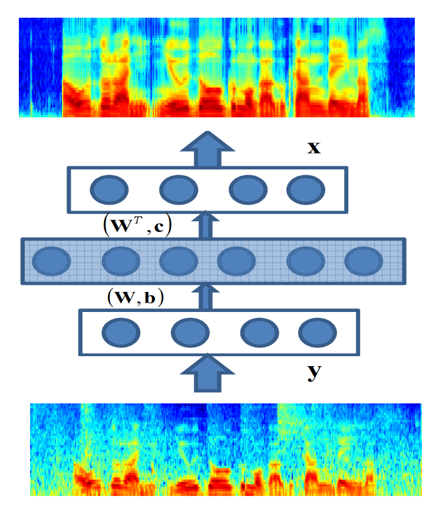

2018

2005

A study on knowledge source integration for candidate rescoring in automatic speech recognition.
IEEE International Conference on Acoustics, Speech, and Signal Processing (ICASSP'05), 2005
IEEE International Conference on Acoustics, Speech, and Signal Processing (ICASSP'05), 2005